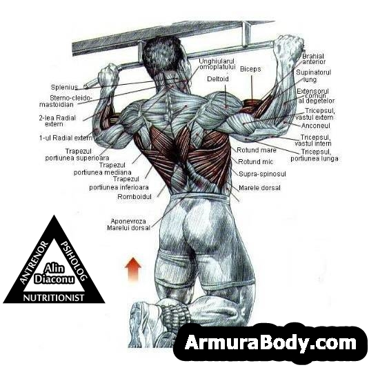

Home
Acesta este un website dedicat fitness-ului si suplimentelor.
Fitness-ul reprezinta o conditie de sanatate a unui individ, iar pe acest site va vom explica cum sa ajungeti in cea mai buna conditie fizica a voastra. De asemenea, va vom prezenta anumite suplimente care va pot ajuta sa va indepliniti scopurile, chiar daca nu incurajam uzul acestora, doar le vom prezenta.
Pe acest site va vom arata cum sa ajungeti in cea mai buna stare fizica folosind greutati, precum haltere sau alte tipuri de exercitii.

Haltera
Portofolio
Pentru a ajunge in cea mai buna conditie fizica, va recomandam 3 exercitii.
Lista exercitiilor
- Tractiunea
Primul exercitiu este tractiunea.

Tractiunea este un exercitiu in care tragi corpul in sus pe o bara suspendata, folosind muschii spatelui si ai bicepsilor, pentru a lucra grupurile musculare din spate.
- Impinsul din culcat
Al doilea exercitiu este impinsul la piept.

Impinsul din culcat este un exercitiu de forta in care, in pozitie culcat pe spate, impingi o greutate (de obicei o bara cu discuri) in sus, implicand mai ales muschii pieptului, umerilor si tricepsilor.
- Genuflexiunea
Al treilea exercitiu este genuflexiunea, unul din cele mai importante, pe care orice atlet ar trebui sa il practice.

Genuflexiunea este un exercitiu de forta in care te apleci in genunchi, coborand trunchiul in jos, pentru a lucra muschii coapselor, feselor si gambei.
Proteina este un nutrient esential pentru construirea si repararea tesuturilor din organism, inclusiv pentru cresterea si refacerea muschilor. Este folosita adesea ca supliment alimentar de catre sportivi si culturisti pentru a sustine dezvoltarea musculara si recuperarea.
Creatina este o substanta produsa in mod natural in organism si este implicata in furnizarea de energie pentru contractia musculara. Suplimentarea cu creatina poate spori performanta sportiva, cresterea musculara, forta si rezistenta.
Pre-antrenamentul este un supliment alimentar conceput pentru a imbunatati performanta si rezistenta in timpul antrenamentelor fizice. Contine de obicei ingrediente precum stimulente, aminoacizi, vitamine si minerale care pot spori energie, concentrare, pomparea muschilor si rezistenta in timpul antrenamentelor.
Este important sa consulti un specialist in nutritie sau medicul tau inainte de a lua suplimente alimentare si sa urmezi instructiunile de utilizare recomandate pentru fiecare produs.